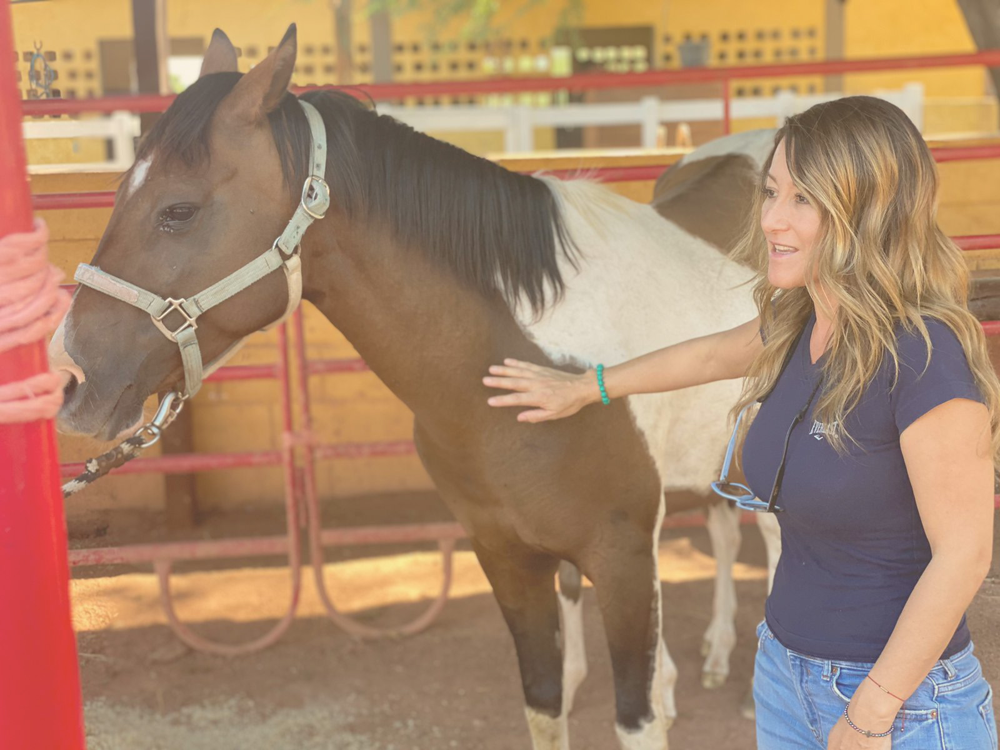
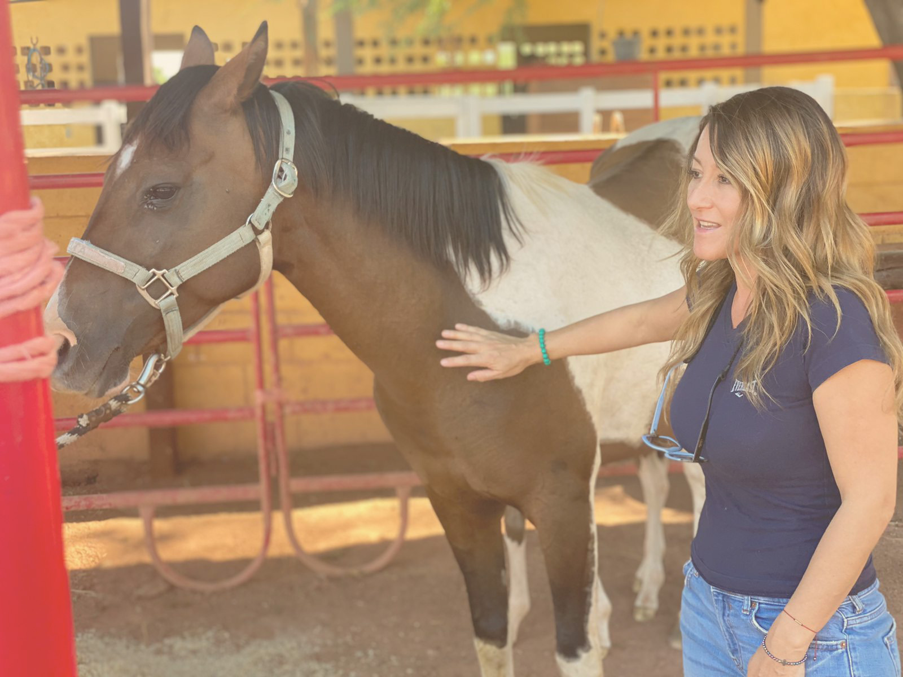

"La conexión que tenemos con los animales, ayuda a que desde nuevos lugares, podamos reconectar, sanar y mejorar nuestra vida, encontrando una forma de ver y escuchar a nuestro yo superior interno y evolucionar; mejorando así el funcionamiento cognitivo, físico, social y emocional de las personas con las que se trabaja."
 

SOBRE MÍ
Empresaria, CEO y CO-Fundadora del Conscious Business Center International.
Especialista en terapias de sanación emocional con caballos y comunicación animal. Líder visionaria
en el campo de la sanación holística y el crecimiento personal. Facilitadora de talleres innovadores
que combinan técnicas espirituales y terapéuticas, para promover la sanación integral y el
florecimiento humano. Comprometida con la responsabilidad personal y el equilibrio mente, cuerpo,
espíritu, como base para la transformación y el bienestar.
Habilidades clave:
- Comunicación animal y terapias de sanación emocional con caballos.
- Facilitación de talleres de Reiki, Reiki Delfínico, Ángeles, Meditaciones con mandalas y
Trabajo espiritual con cristales.
- Enfoque integral y holístico para la sanación emocional y el bienestar.
- Liderazgo inspirador y habilidades de gestión.
“Su propósito es promover el florecimiento humano y el bienestar integral, junto con la
pasión de
acompañar a otros en su viaje de sanación y conexión espiritual, guiándolos hacia una vida
en
coherencia con sus valores y un propósito magnánimo y sagrado”.
Testimonios
Deja tus datos para recibir mayor información o escribe a enciso.magdaleonora@gmail.com
Contacto